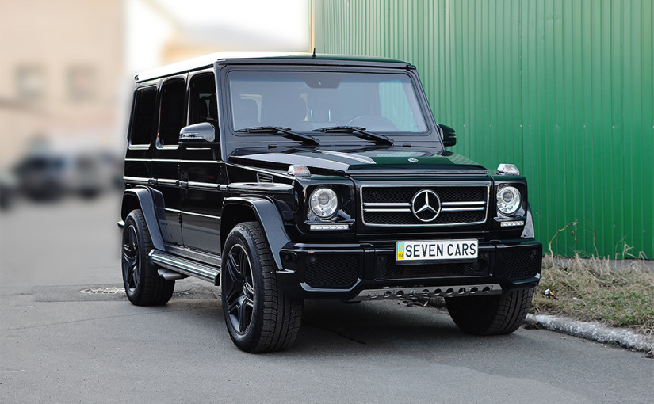

Передісторія

1929 — Випущено Mercedes-Benz G3a — перший шестиколісний «Мерседес» G класу. Колісна формула у даної
моделі — 6x4, вага 1,5 тонни, оснащений 6-циліндровим бензиновим двигуном потужністю 68 к.с., випускався
з 1929 по 1935 роки.
1934 — Випущено Mercedes-Benz G4. Колісна формула у Mercedes-Benz G4 — 6x4, вага 3,5 тонни, 8-циліндровий
бензиновий двигун потужністю від 100 до 115 к.с., випускався з 1934 по 1939 роки.
1972 — Mercedes-Benz і австрійський автовиробник Steyr-Daimler-Puch GmbH почали розробку нового
позашляховика. З цією метою була заснована компанія Gelaendefahrzeug Gesellschaft GmbH з рівними
частками участі. Спочатку новий повнопривідний автомобіль був названий H2 і призначався для потреб
військових.
1973, квітень — створена перша дерев'яна модель машини.
1974 — створений перший металевий прототип машини.
Історія моделі
1979, лютий — Mercedes-Benz представив публіці модель G класу на гонці Поль Рікар на півдні Франції.
1980, листопад — модельний ряд був доповнений закритим мікроавтобусом, для замовлення були доступні дві
версії — довгобазний і короткобазний універсал.
1981 — розширено список додаткового обладнання: кондиціонер, лебідка, резервні паливні баки, жорсткий дах
для автомобіля типу «кабріолет» і захисні ґрати на фарах. Колірна гамма забарвлення кузова була
збільшена з 5 до 22 кольорів.
1982, травень — 230 G був обладнаний електронною системою вприскування палива, яка збільшила потужність
двигуна до 125 к.с. з 105 колишніх. Двигун 230 G отримав нове позначення 230 GE
1983, березень — модель 230 GE пропонується з 4-ступінчастою автоматичною коробкою.
1983, липень — для всіх моделей доступна 5-ступінчаста механічна коробка перемикання передач.
1985 — припинено випуск короткобазного фургона. У стандартне оснащення ввійшла функція блокування
диференціалу.
1986 — на 230GE встановлено каталітичний нейтралізатор відпрацьованих газів. Випущено 50-тисячний
автомобіль.
1987 — чергова модернізація: з'явилися електроприводи стекол дверей і антени приймача, збільшений
паливний бак. Випущена нова модифікація 250GD. Розпочато розробку серії 463.
1989 — на честь 10-річчя моделі випущена модифікація 230GE Classic. На мотор-шоу у Франкфурті
представлена нова серія 463.
1990 — початок випуску серії 463: модифікації 230GE, 300GE, 250GD і 300GD.
1991 — припинено випуск серії 460. Складання серії 462 у Греції.
1992 — презентація серії 461. Новий 2,9-літровий турбодизель. На машини 463 серії встановлюється
круїз-контроль, чохол запасного колеса з нержавіючої сталі, в обробці салону використовується дерево.
Випущений 100-тисячний автомобіль.
1993 — випущена модифікація 500GE.
1994 — модернізація 463 серії: дискові вентильовані гальма передніх коліс, центральне блокування замків
дверей, іммобілайзер. Випуск модифікації G320.
1996 — Кабріолет з електрогідравлічним приводом м'якого верху. Модифікація G300 Turbodiesel. Нові фари.
Надувні подушки безпеки увійшли в стандартне оснащення.
1997 — на G320 серії 463 встановлюється новий мотор V6. 5-ступінчаста автоматична трансмісія. Новий
турбодизель G290 GD.
1998 — нова модифікація G500.
1999 — нова модифікація G500 Classic.
2000 — оновлення салону. Нова обшивка дверей, встановлено блок управління Command, кнопки блокувань
диференціалів перенесені вище між передніми повітродувками.
2001 — дуже великі зміни, що стосуються приладової панелі (багатофункціональне кермо, нова приладова
дошка) і коробки передач (КПП-автомат з функцією Tiptronic), також в наявності клімат-контроль.
Встановлено датчик дощу. Зовні зміни торкнулися білих розсіювачів покажчиків поворотів і задніх
ліхтарів.
2002 — зміни торкнулися керуючої електроніки. З весни 2002 року в список стандартного оснащення входить
електронна система стабілізації ESP (Electronic Stability Program) і система допомоги при екстреному
гальмуванні Brake Assist. Також автомобіль оснащується антипробуксовувальною системою 4-ETS, що імітує
блокування міжосьового і двох міжколісних диференціалів.
2007 — невеликий рестайлінг передніх фар і задніх ліхтарів.
2009 — невеликий рестайлінг решітки радіатора і колісних дисків.
2009 — з червня по серпень випускається обмежена серія моделі G 500 Edition 30 в честь 30-тиріччя
автомобіля.
2012 — невеликий рестайлінг ґратниці радіатора і бамперів.
Перше покоління (W460, 1979—1992; W461, 1992—2013; W462)
У квітні 1973 року компанією Mercedes-Benz був створений перший дерев'яний макет майбутньої
моделі, а вже
через рік був представлений металевий прототип автомобіля. 11 березня 1977 року канцлер Австрії Бруно
Крайський особисто заклав камені під побудову нового павільйону підприємств Steyr-Daimler-Puch AG в
місті Грац (Австрія).
У лютому 1979 року відбулися перші презентації першого позашляховика G-класу. Покази 460 серії проходили
з 5 по 10 лютого на автодромі в Ле Кастелло недалеко від Марселя. На вибір покупців було запропоновано
модельний ряд з чотирьох двигунів. Два з них були бензиновими (230 G і 280 GE) і два — дизельними (240
GD і 300 GD). Всі автомобілі комплектувалися чотириступінчастою механічною коробкою передач і переднім
приводом, що підключається. Гамма моделей включала п'ять варіантів кузова: кабріолет, трьохдверний і
п'ятидверний універсали, а також фургон в двох варіантах — короткобазний (2400 мм) і довгобазний (2850
мм). Базу 2,85 м мав і п'ятидверний універсал. Для задоволення потреб військових організацій була
передбачена можливість замовлення довгобазної моделі не тільки з закритими кузовами, але як
трьохдверний, так і п'ятидверний варіанти з брезентовим тентом. Палітра кольорів була обмежена п'ятьма:
білий кремовий (нім. Crèmeweiß), пшенично-жовтий (нім. Weizengelb), колорадський бежевий (нім.
Coloradobeige), карміновий червоний (нім. Karminrot), а також зелений (нім. Agavengrün).
У листопаді 1980 року модельний ряд був доповнений закритим мікроавтобусом, для замовлення були доступні
дві версії — довгобазний і короткобазний універсал. Через рік компанія розширила список додаткового
обладнання кондиціонером, лебідкою, резервними паливними баками, жорстким дахом для автомобіля типу
«кабріолет» і захисною сіткою на фарах. Колірна гамма забарвлення кузова була збільшена з 5 до 22
кольорів. З'явилася версія з АКПП. Об'єм паливного бака був збільшений на 16 літрів. Потужності
виробництва склали: 1979 рік — 2801 одиниць, 1980 рік — 7533 од., 1981 рік — 6950 од.
У травні 1982 року замість 230 G стартував випуск моделі 230 GE. Новий двигун M102 оснастили системою
впорскування бензину, завдяки чому силовий агрегат розвивав потужність в 125 кінських сил. Потужність
карбюраторного силового агрегату М115 становила 90 і 100 к.с. в залежності від модифікації. Через рік, у
березні 1983 року, модель 230 GE стала пропонуватися з автоматичною 4-ступінчастою трансмісією. У липні
1983 року для всіх моделей стала доступна механічна 5-ступінчаста коробка передач.
Модель Mercedes-Benz 280GE брала участь в ралі Париж-Дакар. У 1982 році на старт вийшло 4 екіпажу:
Migault-Migault, Jaussaud-Brière, Gaillard-Gauvin, Ікс-Брассер. Через рік участь в гонках брало 3
екіпажі: Ікс-Брассер, Migault-Gauvain, Jaussaud-Da Silva. В цьому ж році автомобіль Mercedes-Benz 280GE
№ 142 під керуванням Жаки Ікс і Клод Брассер став переможцем ралі Париж-Дакар. У 1984 році лише 1 екіпаж
вийшов на старт: Jaussaud-Fontenay.
У 1985 році концерн припинив випуск короткобазного фургона. В цей же час в стандартне оснащення
автомобілів включили блокування диференціалів. Через рік на моделі 230 GE і 280 GE в якості опції став
доступний каталітичний нейтралізатор відпрацьованих газів. В цей же час був випущений ювілейний
50-тисячний автомобіль. Застарілий двигун M115 остаточно замінили на M102.
У 1987 році компанія провела чергову модернізацію автомобіля: з'явилися електроприводи дверних стекол і
антени приймача, збільшився об'єм паливного бака. Компанія поповнила модельний ряд W460 новою
модифікацією 250 GD з 2,5-літровим дизельним двигуном OM602 потужністю 84 к.с. (62 кВт). В цей же час
керівництво та інженери Daimler-Benz приступили до розробки 463 серії.
У 1989 році на честь 10-річчя моделі була випущена модифікація 230 GE Classic. Відмінність обмеженої
серії кількістю в 300 екземплярів полягала в пофарбуванні кузова в колір металік і розширений список
стандартного оснащення.
Виробництво 460 серії було завершено в серпні 1991 року з випуском моделей 230 GE і 250 GD. Тоді ж
відбулася презентація серії W461 — спеціальної військової моделі, яка виготовлялася до 2001 року. Він є
автомобілем «для особливих умов експлуатації» і його придбають в основному військові, спецслужби і т.
ін. Даний автомобіль служить в арміях більш ніж 20 країн світу — таких як Німеччина, Швейцарія, Канада,
Австралія, Єгипет і т. д. Навіть США закупили близько тисячі автомобілів Ґелендеваґен в кузові W461, так
як Хаммер Н1 не влазить у вертоліт. Випускається в довгобазовому і короткобазовому варіантах, так само з
кузовом кабріолет з брезентовим верхом. Базова ціна довгобазового суцільнометалевого автомобіля
Ґелендеваґен з кузовом W461 в Німеччині для юридичних осіб становить 58 000 євро. Продаж фізичним особам
обмежений — для покупки цієї машини потрібен «сертифікат кінцевого споживача» (доказ необхідності даного
автомобіля).
Візуальними відмінностями моделі W461 від цивільної версії W463 є: вузький сталевий передній бампер без
протитуманних фар (можуть опціонально кріпитися зверху на бампер під головними фарами), металева решітка
радіатора (у моделі W463 решітка пластикова), гумові окуляри фар зміненої форми (у моделі W463 окуляри
квадратні і пластикові), вузькі металеві водостоки на рамці лобового скла, дзеркала вантажного типу без
покажчиків поворотів, змінений щиток приладів, відсутність дерев'яних вставок в торпедо, тунель між
передніми кріслами, механічні склопідйомники, відсутність люка в даху, гумові молдинги на дверях і
крилах, гумові розширювачі крил, вузький сталевий розділений на дві частини задній бампер, інше
розташування номерного знака.
Mercedes G65 AMG
Найпотужнішою версією G серії є G65 AMG з першим в історії бренду 6.0-літровим V12 бітурбованим двигуном
на 604 к.с., який став основою винятковості автомобіля. Пару двигуну складає семиступінчаста автоматична
коробка передач. До сотні G65 з такою силовою установкою розганяється за 5.2 секунд. Витрата палива
складає 17.0 л/100 км у змішаному циклі. Привід у автомобіля на всі колеса. До бази G65 AMG увійшли:
задні протитуманні фари, омивачі передніх фар, світлодіодні ходові вогні, електропривод бічних дзеркал,
шкіряне багатофункціональне рульове колесо з налаштуванням та підігрівом, шкіряна обшивка салону,
передні сидіння з електроприводом, підігрівом та вентиляцією, центральний замок з брелоком, вікна з
електроприводом, навігаційна система, бортовий комп'ютер, датчики дощу та двозонний клімат-контроль.
Про безпеку автомобіля подбають: чисельні подушки безпеки, антиблокувальна гальмівна система, система
розподілу гальмівного зусилля, допоміжна система гальмування, круїз-контроль, електронний контроль
стійкості, антибуксувальна система, круїз-контроль і система адаптивного освітлення дороги. Сумувати у
салоні не дасть аудіосистема на вісім динаміків з MP3.